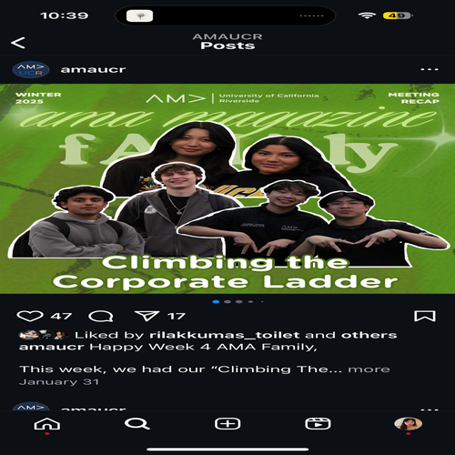
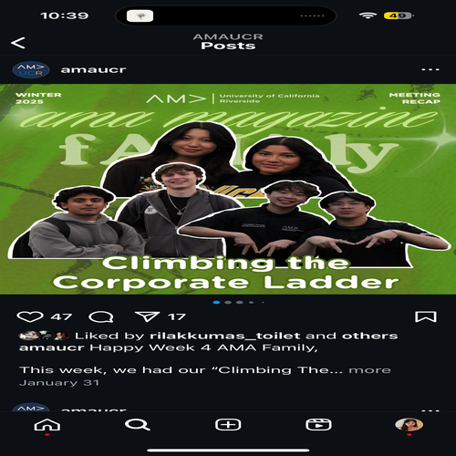
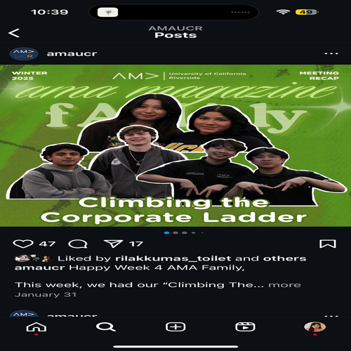

Lindsey Chen
Hi I’m Lindsey, an aspiring student who hopes to pursue a career in marketing. I am a first year student studying pre-business. I am someone who has always loved learning new things. Trying new things drives me to seek innovative solutions and fresh perspectives. I love playing sports and have tried playing many different forms of sports such as volleyball, swim, dance and even more! The sports environment has made me someone who always strives to be the best version of myself and helps me adapt quickly in times of adversity. My interests lie in being able to strong promote a brand, and to use my creativeness to help a brand frow or maintain their marketing tactics. A fun fact about myself is that I love the Dallas Cowboys Cheerleaders. I am also in some clubs at UCR, the clubs are American marketing association and actually I am currently a intern, which you might know because of Grace, but another club I am in is chinese student association.
I would say my biggest weaknesses would definitely be overcomplicating tasks. When being faced with unfamiliar tasks or experiences I tend to struggle with starting the basics because my mind immediately jumps to a more complex idea which can be difficult to find a clear starting point. Having this tendency tends to slow me down when working on assignments. One way I found out to combat this was to get some advice and feedback. Getting advice from people helps me gain more insight and reminds me to focus more on progress rather than perfection. My best strength would definitely be my ability to work under pressure. There are many times in volleyball where I have to perform my best under pressure from coaches and teammates. And each time, I am able to overcome the feelings of pressure and perform well. The reason why I am interested in the position is because of the overall community this club fosters. When wanting to find clubs to join, I saw AMAs instagram page, and from their social media I was able to see the environment the club encourages just through pictures. When going to the first meeting of the club, I was nervous and even thinking of not going to the first meeting because I knew I would be alone. But immediately when walking into the meeting room, the board members were very welcoming and I felt belonging, as if I had a purpose shaping this club.
A time I failed would be when trying to join my highschools girls volleyball varsity team. When trying to join my high school's volleyball team, I aimed for the varsity level but unfortunately did not make the team my second year at high school. The reason was because I was unprepared for the tryout and did not attempt to practice at all. After making the JV team, I made sure to make it my goal to get on the varsity team. In order to be on the varsity team, my coach had made it a rule where you must run a mile within 8 minutes. In order to get a mile time under 8 minutes, I started working out and during the month before tryouts, I would run multiple laps around my neighborhood preparing for the tryouts. All the practice did indeed pay off though because I was able to run under the 8 minute timer and even had a 7:43 time and made it into the varsity volleyball team. This experience helped me learn that in order to reach my goals, I need to put in the time and effort in order to get the best results. Now, whenever I am setting goals for myself, I make sure that I am well prepared and ready to achieve my goal.
Experience
Social Media and Product Development Internship
• Creates content for a newly launched Instagram page while maintaining and updating website event listings for subscribers.
• Research and compile family-friendly events, parks, and activities in Los Angeles County into a digital calendar, identify potential partnerships with local businesses and content creators to expand community engagement.
• Support customer retention strategies for the Orange Country region by enhancing outreach efforts and promoting relevant events.
Marketing Intern
• Assist in developing and publishing creative social media content for Instagram, utilizing skills in graphic design, photography, and video editing.
• Collaborate in weekly strategic meetings aimed at driving club growth and increasing member engagement.
Logistics Coordinator
• Monitored inbound and outbound freight operations to establish timely delivery of packages.
• Prepared and documented shipment activities and cargo movements to enable tracking history and maintain accurate records.
• Coordinated shipping requests for expedited delivery and documented accurately to achieve the correct billing.
Education
University of California, Riverside
Eleanor Roosevelt High School
Portfolio
 



